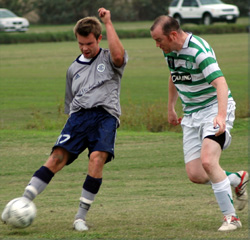
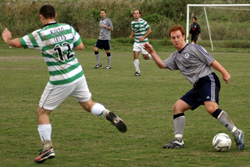
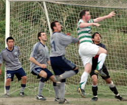

|
Misato, Sunday 14th October,
Some would say the "luck of the Irish" had something to do with the comeback the Celts pulled off at Misato, 0-3 down against YCAC with 10 minutes of the second half gone; who would have thought that the game could end in a draw. Today, there were no four leaf clovers or lucky leprechauns around, just some good old fashion grit, determination, strength of character, confidence & team spirit from the lads to get back into a game that just ran away from us.
Once again Celts were missing some regular first team players and having two players failing the early morning fitness test meant a mere 12 players available with two of them having just played 80 minutes in the earlier 2nd division game.
The game kicked off with YCAC by far the livelier and Celts finding it hard to find their rhythm. YCAC made the most of the Celts lethargy and were soon a goal to the good. Celts lost possession on the right within their own half and this allowed YCAC to get the ball across box and to the YCAC lad who had a cracking shot from 30 yards out that beat Aki with impunity.
As Celts restarted the game, the YCAC goal seemed to kick start the lads and we soon found our game, Marc Horan picked up the ball in the middle of the park and nonchalantly skipped passed a number of YCAC midfielders and defenders before curling the ball round the keeper and had the "luck of the Irish" been present then perhaps it would have been a goal, however having had got the ball past most of the YCAC players it was the post that stopped Marc's superb effort from equalising for the Celts.
As the half continued it was a pretty even game, with both teams using the wings and making way into the oppositions half, Celts definitely had clear cut chances that they should have put away.
With 5 minutes to half time, an attempt to walk the ball out of the Celts defence resulted in lost possession that the lively YCAC striker intercepted, cut into the box took a shot that was blocked by Stuart but the rebound fell back to the striker who casually rounded Aki to put YCAC 2 goals to the good.
The Celts half time team talk was positive; Celts were definitely in the game despite the score line.
The 2nd half kicked off a more even encounter with both teams fighting hard to close down the play and win possession. However within the first 10 minutes, a cheeky little lob from the YCAC midfielder was
misjudged by the Celts defence and the young sprightly YCAC striker peeled off his stranded marker and raced goal bound, as Aki came racing out the striker lobbed him with his first touch to make it 0-3 YCAC..
You would have thought that Celts heads would go down by now, but you'd be wrong, the new found team spirit and the desire to win was evident as Celts finally found the right gear.
The game then turned, Celts getting more possession, closing down YCAC at every opportunity and moving the ball around to make a number of opportunities, however unable to finish it seemed that perhaps it wasn't to be a Celts day.
With less the 25 minutes on the clock one of the Celts forays, worked from the back, through the middle down the right and a cross into the box ended with Vince finding the back of the net and pulling a goal back for the Celts 1-3.
10 minutes later with a number opportunities being missed at both ends, but mainly by the Celts, Vince found himself deep into the YACA half, hugging the touchline to the right, the following cross-come-shot looped up and over the back peddling YCAC keeper and found itself into the back of the goal despite the goal keepers valiant efforts to pull it back out. 2-3.
With the clock running down, tired legs on both sides, a couple of late substitutions due to injuries from YCAC, Celts third goal came from a pinpoint accurate pass by Gavin inside the YCAC full back to Marc who ran on passed to Vince who from 5 yards out tapped in the equaliser. Oh how we celebrated.........
A hard fought and well played game by both sides and a fair result at the end of the day taking everything into account. I'm sure YCAC will be disappointed to surrender a 3 goal lead. Another outstanding performance from Henry, Toru and Vince, it was great to have Marc back in the team and solid performances all over the field with Aki, Fred, Chris, Gavin, Libor, Stuart, Damo and Oli all having good games on the whole, but there were silly mistakes and missed opportunities that we need to cut out of our game.
Report by Sam Yusef
|